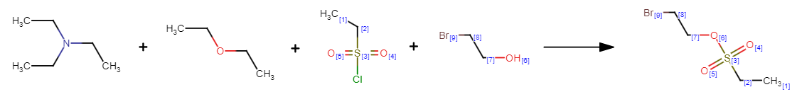

Templates¶
reaction utils contains routines for extracting reaction templates using the RDchiral package. This code is based on the work of Thakkar et al. (Chem. Sci., 2019) but with some re-factoring and other additions.
Template extraction¶
Let’s start with this atom-mapped reaction
CCN(CC)CC.CCOCC.Cl[S:3]([CH2:2][CH3:1])(=[O:4])=[O:5].[OH:6][CH2:7][CH2:8][Br:9]>>[CH3:1][CH2:2][S:3](=[O:4])(=[O:5])[O:6][CH2:7][CH2:8][Br:9]
First we create a ChemicalReaction object that is encapsulating the reaction and provides some
simple curation routines.
from rxnutils.chem.reaction import ChemicalReaction
reaction = "CCN(CC)CC.CCOCC.Cl[S:3]([CH2:2][CH3:1])(=[O:4])=[O:5].[OH:6][CH2:7][CH2:8][Br:9]>>[CH3:1][CH2:2][S:3](=[O:4])(=[O:5])[O:6][CH2:7][CH2:8][Br:9]"
rxn = ChemicalReaction(reaction)
if you inspect the reactants_list property, you will see that two of the reactants from the reaction
SMILES have been moved to the list of agents because they are not mapped.
rxn.reactants_list
>> ['Cl[S:3]([CH2:2][CH3:1])(=[O:4])=[O:5]', '[OH:6][CH2:7][CH2:8][Br:9]']
rxn.agents_list
>> ['CCN(CC)CC', 'CCOCC']
Now we can extract a reaction template
rxn.generate_reaction_template(radius=1)
rxn.retro_template
>> <rxnutils.chem.template.ReactionTemplate at 0x7fe4e9488d90>
rxn.retro_template.smarts
>> '[C:2]-[S;H0;D4;+0:1](=[O;D1;H0:3])(=[O;D1;H0:4])-[O;H0;D2;+0:6]-[C:5]>>Cl-[S;H0;D4;+0:1](-[C:2])(=[O;D1;H0:3])=[O;D1;H0:4].[C:5]-[OH;D1;+0:6]'
The radius is an optional argument, specifying the radius of the template.
Template manipulation¶
The reaction template, either the canonical (forward) or retro template is encapulsated in a ReactionTemplate object that can be used to apply the template to a molecule or to generate fingerprints or hash strings.
Let’s see if the template generated above is capable of re-generating the expected reactants.
smiles="CCS(=O)(=O)OCCBr"
reactant_list = rxn.retro_template.apply(smiles)
reactant_list
>> (('CCS(=O)(=O)Cl', 'OCCBr'),)
we see that returned list (technically a tuple) contains one item, implying that the template was specific and only produced one set of reactants. These reactants as you see are identical to the reactants in the reaction SMILES above.
To create a hash string for the template, there are a number of routines
rxn.retro_template.hash_from_bits()
>> 'a1727cc9ed68a6411bfd02873c1615c22baa1af4957f14ae942e2c85caf9adb5'
rxn.retro_template.hash_from_smarts()
>> '4cb9be0738a3a84e7ed4fb661d2efb73c099fc7d6c532a4b294c8d0d'
rxn.retro_template.hash_from_smiles()
>> '5b2ff2a69fb7bd6a032938e468684773bcc668928b037bbec0ac8335'
The first one is creating the hash string from the fingerprint bits that are one, whereas the other two creates it by hashing the SMARTS and the SMILES string, respectively.
A Morgan fingerprint can be computed for a reaction template:
rxn.retro_template.fingerprint_vector(radius=2, nbits=1024)
>> array([0., 0., 0., ..., 0., 0., 0.])